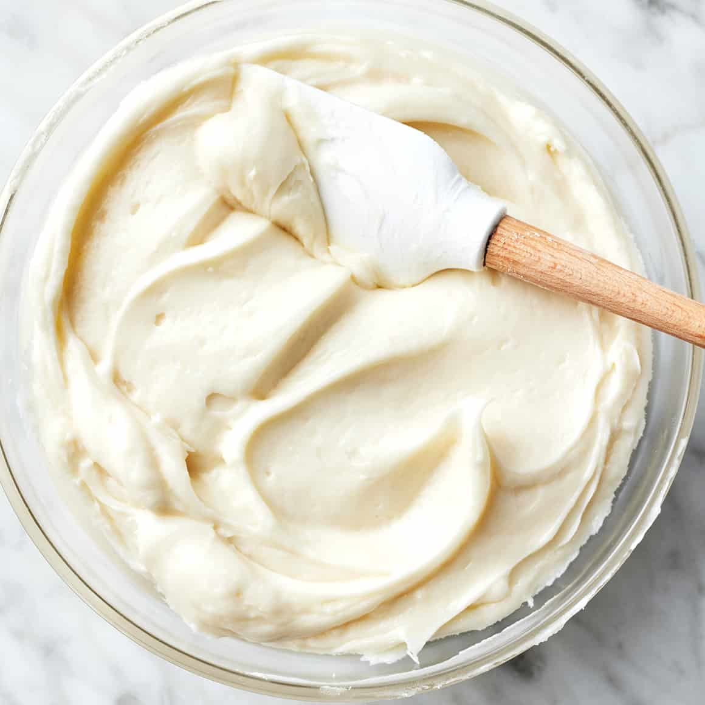

Cream Cheese Frosting

Description
This is the cream cheese frosting for the
Best Carrot Cake.
Ingredients
- 1/2 cup butter or margarine, softened
- 11 ounces cream cheese, softened (about a block and a half)
- 1 (16-ounce) package powdered sugar
- 1-1/2 teaspoons vanilla extract
Steps
- Beat butter and cream cheese at medium speed with an electric mixer
until creamy.
- Add powdered sugar and vanilla extract; beat at high speed 10 seconds
or until smooth.
Back to Odin Recipes